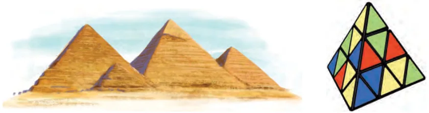
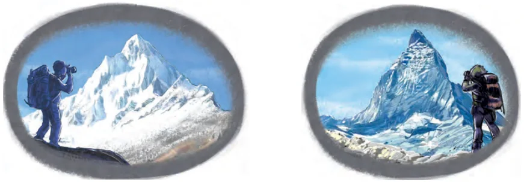

A pyramidal shape is of the type shown in the following figures.

Its base may be a triangle, a square or indeed any closed shape. All points in the base are connected to a single point (the apex) which lies in a different plane. You can make the pyramids by using the cutouts of nets given at the end of the textbook.
The famous pyramids in Egypt have square bases. The puzzle in Fig. 14.11B (made by the Hungarian architect Erno Rubik) has a triangular base.
Some mountains have pyramidal peaks (formed by glacier erosion over many millennia). In India, there is the Shivling Peak in the state of Uttarakhand. An example from the Alps is the Matterhorn.

The volume \(V\) of a pyramidal shape is found by using the formula
\(V = \frac{1}{3} \times \text{area of base} \times \text{height}.\)
The same formula is applicable whether the base is triangular, square or any other shaped flat surface.
Note that the formula is the same as the one used for the volume of a cone. Indeed, we may think of a cone as a pyramid with a circular base.
The surface area of a pyramidal shape is found by adding up the areas of all the polygonal faces. So, we do not need a separate formula for the surface area.